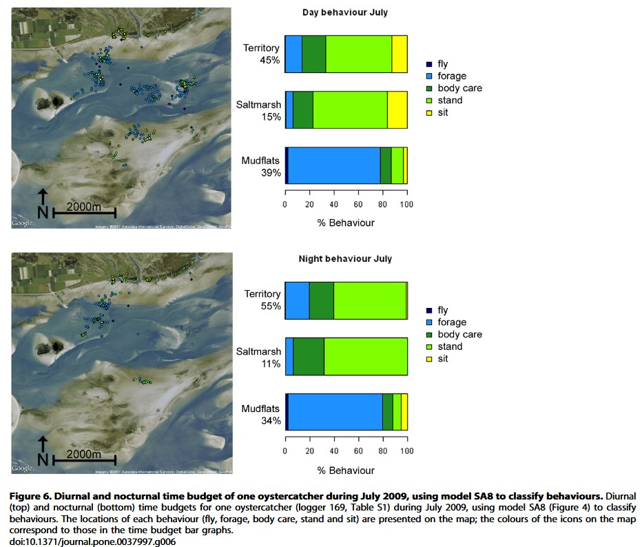
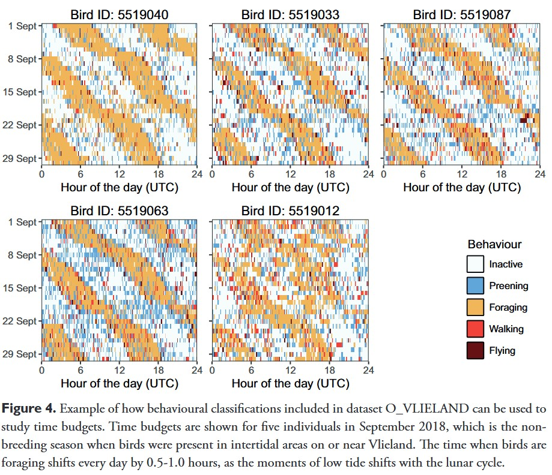

library(tidyverse)
library(lme4)
library(ggplot2)
library(patchwork)Power analysis
Defining research targets
We aim to assess what behavior a bird hold at a site.
Several questions are defined:
(i) classify behavior per individual across two or more species of shorebirds
(ii) assess the Intraclass Correlation Coefficient (ICC) between different species: how similar the birds are in term of behavior time budget?
(iii) assess the average proportion of behavior held per species and per sites
(iv) compare and test whether shorebirds use different sites to either forage or roost depending the tide and the time
Selecting existing data
Now we established our research targets, the next step is to select the appropriate datasets to extract individual behavior data. So we can simulate a synthetic case that we will use to assess our sample features requirement to design at the best the method we will implement on the ground in the real world.
We extracted results from accelerometer data set from Oyster catchers Shamoun-Baranaes et al. 2012.
Load the data in your R environment:
Oyster catchers
Accessible on Movebank with accelerometry available (consulted on 07 April 2026):
- van der Kolk H-J, Desmet P, Oosterbeek K, Allen AM, Baptist MJ, Bom RA, Davidson SC, de Jong J, de Kroon H, Dijkstra B, Dillerop R, Dokter AM, Frauendorf M, Milotić T, Rakhimberdiev E, Shamoun-Baranes J, Spanoghe G, van de Pol M, Van Ryckegem G, Vanoverbeke J, Jongejans E, Ens BJ (2022) GPS tracking data of Eurasian oystercatchers (Haematopus ostralegus) from the Netherlands and Belgium. ZooKeys 1123: 31-45. https://doi.org/10.3897/zookeys.1123.90623
Data available from Peter Desmet et al. - 2021.
Other potential data
Accessible on Movebank but without accelerometry available yet (consulted on 07 April 2026):
Godwits - GPS devices used - No accelerometer data available
- CHAMPAGNON, J., COURBIN N., DUFOUR P., TILLO S., DENOUAL L., GREMILLET D., JIGUET F., DURIEZ O. 2025. MIGRALION - Caractérisation de l’utilisation du golfe du lion par les migrateurs terrestres et l’avifaune marine à l’aide de méthodes complémentaires : Rapport final d’analyses du Lot 3 « Télémétrie, migrateurs terrestres et oiseaux marins ». Rapport pour l’OFB. 149 PP. https://www.eoliennesenmer.fr/migralion-lot-3
Data available from Jiguet Frederic et al. - 2025.
Plovers - Argos devices used - No accelerometer data available
- Exo K, Hillig F, Bairlein F. 2019. Data from: Migration routes and strategies of Grey Plovers (Pluvialis squatarola) on the East Atlantic Flyway as revealed by satellite tracking. Movebank Data Repository. https://doi.org/10.5441/001/1.vv0ft02m
Data available from Klaus-Michael Exo et al. - 2019.
Curlew and Whimbrel - GPS devices used - No accelerometer data available
Packages
Setting variances
Proportions of behaviors are extracted from these results below.

Variance between individuals in behavior proportions are extracted from these results below.

# True population mean behavioural budgets (must sum to 1)
true_means <- c(
long_fly = 0.03,
forage = 0.35,
roost = 0.57,
short_fly = 0.05
)
# Between-individual SD on logit scale (reflects real biological variation)
between_ind_sd <- c(
long_fly = 0.21,
forage = 0.32,
roost = 0.32,
short_fly = 0.19
)
# Within-individual SD (measurement noise per observation window)
within_ind_sd <- c(
long_fly = 0.40,
forage = 0.28,
roost = 0.22,
short_fly = 0.38)
# Number of observation windows per individual (e.g., hourly segments)
n_obs_per_bird <- 96 # 30-min windows over ~2 days continuous recording
# Simulation parameters
n_sims <- 500 # permutations per N
sample_sizes <- c(5, 10, 15, 20, 25, 30)
behaviours <- names(true_means)Helpers
logit <- function(p) log(p / (1 - p))
inv_logit <- function(x) 1 / (1 + exp(-x))Simulating sampling design
simulate_dataset <- function(n_birds, behaviour) {
mu <- logit(true_means[behaviour])
b_sd <- between_ind_sd[behaviour]
w_sd <- within_ind_sd[behaviour]
# Individual-level random intercepts
bird_effects <- rnorm(n_birds, 0, b_sd)
# Observation-level proportions
obs <- map_dfr(1:n_birds, function(i) {
raw <- rnorm(n_obs_per_bird, mu + bird_effects[i], w_sd)
tibble(
bird_id = i,
prop = inv_logit(raw)
)
})
obs
}get_ci_width <- function(n_birds, behaviour) {
dat <- simulate_dataset(n_birds, behaviour)
# Bird-level mean (the natural unit for a behavioural budget)
bird_means <- dat %>%
group_by(bird_id) %>%
summarise(mean_prop = mean(prop), .groups = "drop")
# 95% CI via t-distribution
n <- nrow(bird_means)
m <- mean(bird_means$mean_prop)
se <- sd(bird_means$mean_prop) / sqrt(n)
ci_width <- 2 * qt(0.975, df = n - 1) * se
tibble(
n_birds = n_birds,
behaviour = behaviour,
mean_est = m,
ci_width = ci_width,
ci_pct = ci_width * 100 # as percentage points
)
}message("Running simulations — this may take ~30 seconds...")
results <- expand_grid(
sim = 1:n_sims,
n_birds = sample_sizes,
behaviour = behaviours
) %>%
pmap_dfr(function(sim, n_birds, behaviour) {
get_ci_width(n_birds, behaviour)
})
# Summarise across simulations
summary_df <- results %>%
group_by(n_birds, behaviour) %>%
summarise(
mean_ci_pct = mean(ci_pct),
sd_ci_pct = sd(ci_pct),
lo95 = quantile(ci_pct, 0.025),
hi95 = quantile(ci_pct, 0.975),
.groups = "drop"
)
message("Simulations complete.")# Uses the LARGEST sample (30 birds) as ground truth
# Subsamples 1..30 and tracks how the estimated mean converges
message("Running accumulation curves...")
n_max <- 30
n_raref <- 200 # permutations per step
accumulation <- expand_grid(
sim = 1:n_raref,
n_sub = 1:n_max,
behaviour = behaviours
) %>%
pmap_dfr(function(sim, n_sub, behaviour) {
dat <- simulate_dataset(n_max, behaviour)
selected_birds <- sample(unique(dat$bird_id), n_sub)
sub <- dat %>% filter(bird_id %in% selected_birds)
tibble(
sim = sim,
n_sub = n_sub,
behaviour = behaviour,
mean_prop = mean(sub$prop)
)
})
accum_summary <- accumulation %>%
group_by(n_sub, behaviour) %>%
summarise(
mean_est = mean(mean_prop),
sd_est = sd(mean_prop),
lo = quantile(mean_prop, 0.025),
hi = quantile(mean_prop, 0.975),
.groups = "drop"
) %>%
mutate(behaviour = factor(behaviour,
levels = c("forage", "roost", "short_fly", "long_fly"),
labels = c("Foraging", "Roosting", "Short Flight", "Long Flight")))behaviour_colours <- c(
"Foraging" = "#E76F51",
"Roosting" = "#457B9D",
"Short Flight" = "#2A9D8F",
"Long Flight" = "#E9C46A"
)
summary_df <- summary_df %>%
mutate(behaviour = factor(behaviour,
levels = c("forage", "roost", "short_fly", "long_fly"),
labels = c("Foraging", "Roosting", "Short Flight", "Long Flight")))
# ── Plot 1: CI width as % vs N (main answer) ─────────────────
ggplot(summary_df, aes(x = n_birds, y = mean_ci_pct, colour = behaviour, fill = behaviour)) +
geom_ribbon(aes(ymin = lo95, ymax = hi95), alpha = 0.12, colour = NA) +
geom_line(linewidth = 1.2) +
geom_point(size = 3) +
geom_hline(yintercept = 10, linetype = "dashed", colour = "grey40", linewidth = 0.7) +
annotate("text", x = 30.5, y = 10.5, label = "10% threshold", hjust = 1,
size = 3.2, colour = "grey40") +
scale_colour_manual(values = behaviour_colours) +
scale_fill_manual(values = behaviour_colours) +
scale_x_continuous(breaks = sample_sizes) +
scale_y_continuous(labels = scales::label_percent(scale = 1),
limits = c(0, NA)) +
labs(
title = "95% CI Width as a Function of Sample Size",
subtitle = "Shaded band = 95% simulation interval across 500 permutations",
x = "Number of tracked individuals",
y = "95% CI width (percentage points)",
colour = "Behaviour",
fill = "Behaviour"
) +
theme_minimal(base_size = 13) +
theme(
legend.position = "bottom",
panel.grid.minor = element_blank(),
plot.title = element_text(face = "bold")
)
# ── Plot 2: Accumulation / stability curve ────────────────────
ggplot(accum_summary, aes(x = n_sub, y = mean_est * 100,
colour = behaviour, fill = behaviour)) +
geom_ribbon(aes(ymin = lo * 100, ymax = hi * 100), alpha = 0.12, colour = NA) +
geom_line(linewidth = 1.1) +
geom_hline(data = tibble(
behaviour = factor(c("Foraging", "Roosting", "Short Flight", "Long Flight")),
true_val = c(40, 38, 12, 10)),
aes(yintercept = true_val, colour = behaviour),
linetype = "dotted", linewidth = 0.8) +
scale_colour_manual(values = behaviour_colours) +
scale_fill_manual(values = behaviour_colours) +
scale_x_continuous(breaks = seq(0, 30, 5)) +
scale_y_continuous(labels = scales::label_percent(scale = 1)) +
facet_wrap(~behaviour, scales = "free_y") +
labs(
title = "Behavioural Budget Accumulation Curve",
subtitle = "Dotted line = true population mean. Shaded = 95% interval of subsampled estimates.",
x = "Number of tracked individuals",
y = "Estimated time budget (%)",
colour = "Behaviour",
fill = "Behaviour"
) +
theme_minimal(base_size = 12) +
theme(
legend.position = "none",
panel.grid.minor = element_blank(),
strip.text = element_text(face = "bold"),
plot.title = element_text(face = "bold")
)
summary_df %>%
select(behaviour, n_birds, mean_ci_pct) %>%
pivot_wider(names_from = n_birds, values_from = mean_ci_pct,
names_prefix = "N=") %>%
print()# A tibble: 4 × 7
behaviour `N=5` `N=10` `N=15` `N=20` `N=25` `N=30`
<fct> <dbl> <dbl> <dbl> <dbl> <dbl> <dbl>
1 Foraging 16.1 9.88 7.74 6.54 5.78 5.24
2 Long Flight 1.56 0.961 0.742 0.627 0.552 0.512
3 Roosting 18.1 10.7 8.23 7.09 6.24 5.64
4 Short Flight 2.26 1.39 1.08 0.910 0.806 0.734